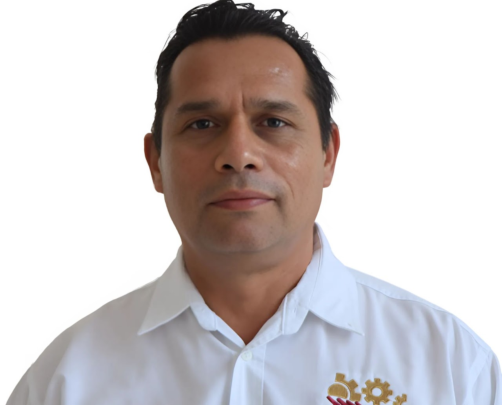

Dr. Maximiliano Vanoye Eligio
Doctorado en Ciencias en Manejo de Recursos Naturales Tropicales
Maestría en Ciencias en Biología
Licenciatura en Biología

Dr. Ludwin Jaime Estrada Ramírez
Doctorado en Investigación para la Educación

Dr. José Alberto Sánchez López
Doctorado en Ciencias Económica Administrativas

Dra. María del Carmen Gómez Camal
Doctorado en Investigación para la Educación

Dra. Jocabeth Eunice Naal Espinosa
Doctorado en Ciencias de la Educación

Dr. Jimmy Ricardo Mier Guerra
Doctorado en Ciencias Biológicas

Mtra. Paula Viveros Moreno
Maestría en Ingeniería Administrativa

Mtra. Blanca del Rosario Martín Canché
Maestría en Gestión y Administración de Proyectos

Mtra. Félix Alejandra Luna Medina
Maestría en Innovación Administrativa

Mtra. Rosa Elena Medina Hernández
Maestría en Innovación Administrativa